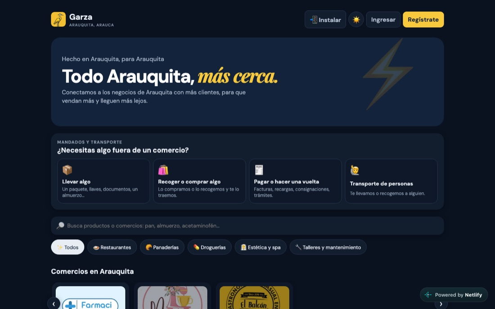

2026 · App web instalable (PWA)
Garza · Arauquita, Arauca
Plataforma local de domicilios y comercio: restaurantes, panaderías, droguerías y tiendas de Arauquita, más mandados, transporte en motocarro y agenda de citas con estéticas y talleres. Hecho en Arauquita, para Arauquita.
- Cuatro paneles: cliente, comercio, domiciliario y administrador.
- Pedidos al instante y notificaciones push a comercios y domiciliarios.
- Se instala en el celular como una app, sin pasar por tiendas.
- React
- TypeScript
- Vite
- Supabase
- PostgreSQL
- Web Push
- Netlify